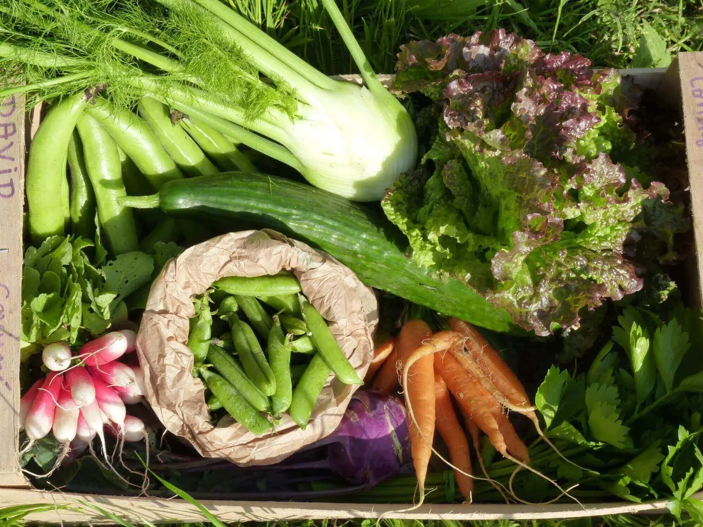
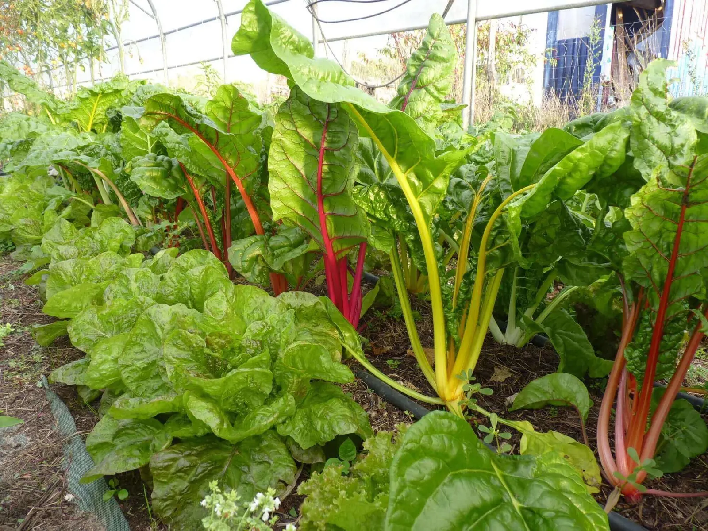
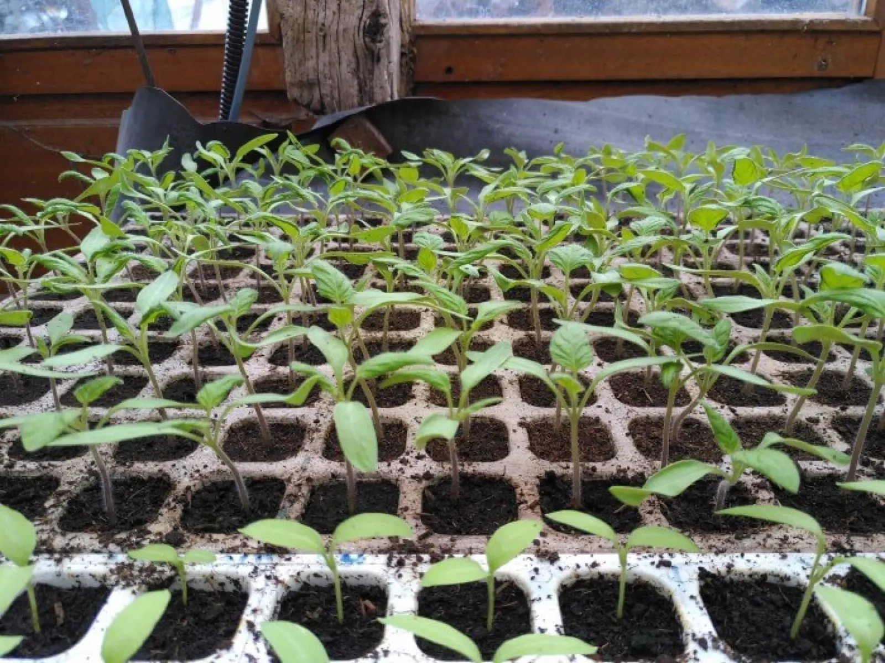
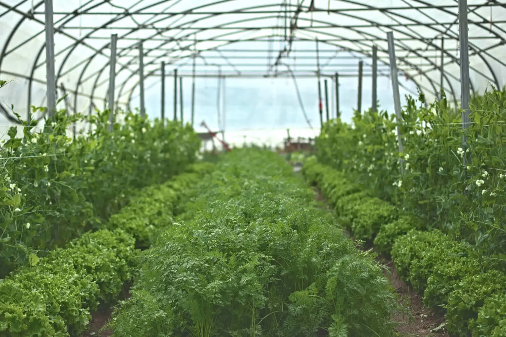
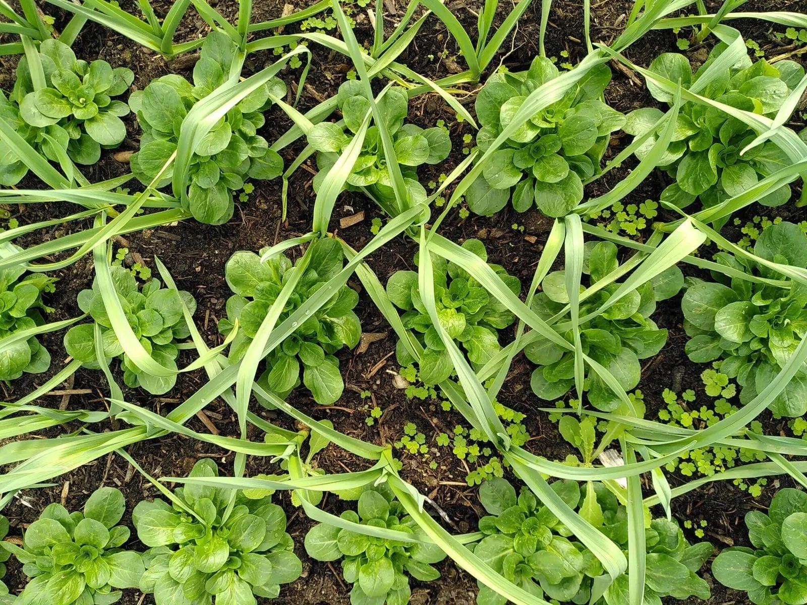
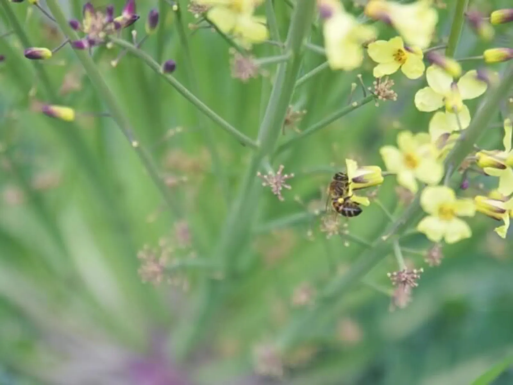
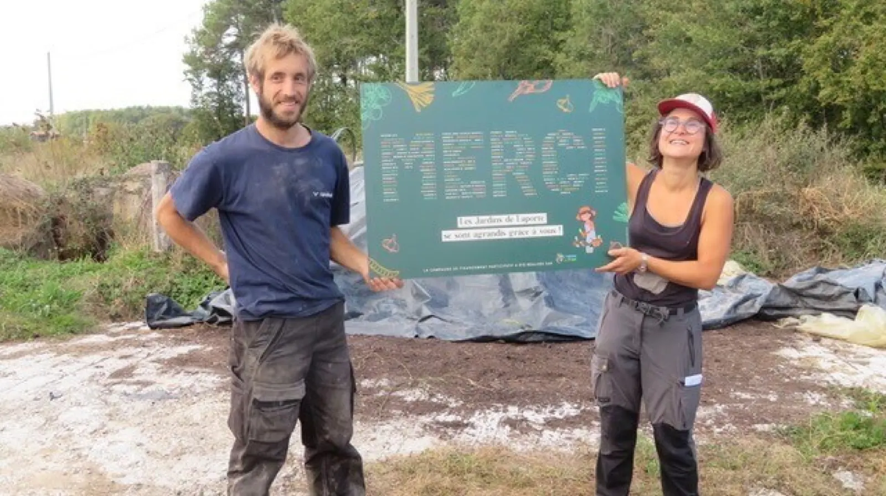

Avec abonnement ou au détail, de 17 h à 20 h.
Vente directe de légumes de saison en Sud Gironde
À Labescau, nous cultivons 8 000 m² en agriculture biologique, dont 1 300 m² de serres. Nos légumes se retrouvent à la boutique de la ferme, à l'AMAP de Bègles et au Joyeux marché de Préchac.
- 8 000 m²en agriculture biologique
- 1 300 m²de serres
- Nos plantsfaits sur place, sauf pommes de terre et ail
- Pas de labouret des couverts végétaux
- Depuis 2017à Labescau, en Sud Gironde


Où trouver nos légumes ?
Trois rendez-vous réguliers, et trois restaurants partenaires.
-
Boutique à la ferme
14 € · 26 €Les jeudis, de 17 h à 20 hPaniers de 14 € et 26 €, avec abonnement ou au détail, plus bières, pains, œufs, viande bio et locaux. Commande jusqu'à la veille au soir sur notre page Cagette.
Abonnement 5 mois20 paniers + 1 panier offert et un trio de conservesAbonnement 10 mois40 paniers + 3 paniers offerts et un trio de conserves -
AMAP de Bègles
7,50 € · 15 € · 30 €Les mardis, de 18 h 30 à 19 h 30Paniers à 7,50 €, 15 € ou 30 € par semaine, avec abonnement annuel. Informations sur amapbegles33.fr.
-
Joyeux marché de Préchac
9 h 30 · 14 hLe premier dimanche du mois, d'avril à décembreSur la place de l'Église : marché de producteurs avec restauration, buvette et animation musicale.
-
Les restaurants partenaires
- Bienvenue au club, Bazas
- La Corne Verte, Bazas
- La terrasse de la Ferme, Captieux

Nous réalisons la quasi-totalité de nos plants, à part les pommes de terre et l'ail.
De quoi gagner en autonomie et avoir plus de choix de variétés.
Une production respectueuse de la vie du sol
Notre production respecte la biodiversité, et d'abord la vie du sol.
Ce qui nous inspire
- L'agroécologie
- Le maraîchage sur sol vivant
- La permaculture
Ce que nous faisons
- Pas de labour
- Des couverts végétaux dans les rotations
- L'association de cultures
- Des arbres fruitiers associés aux légumes
Les produits phytosanitaires autorisés en bio restent exceptionnels chez nous : nous préférons les filets anti-insectes, le respect des rotations et l'association des légumes.


Qui sommes-nous ?
Le 1er janvier, David crée les Jardins de Laporte à Labescau, sur un terrain qu'il a en propriété.
Le 1er janvier, Emeline et David s'associent pour créer le GAEC Ferme Laporte.
Selon les années et les saisons, nous accueillons des stagiaires et des apprentis de formations agricoles (Centre Beauséjour à Gironde-sur-Dropt, MFR de l'Entre-deux-Mers, CFA de La Réole…), ainsi que des woofeurs.
Nous sommes associés au laboratoire de transformation La Nomali & Co, à Castets-et-Castillon.

Visites à la ferme
Nous pouvons vous accueillir pour des visites professionnelles ou pédagogiques. Contactez-nous pour en parler.
Écrire à la fermeDernières nouvelles
Toutes les actualités de la ferme sont sur notre page Facebook, @FermeLaporte33. Pour une question, une commande ou une visite, écrivez-nous ou appelez David et Emeline.